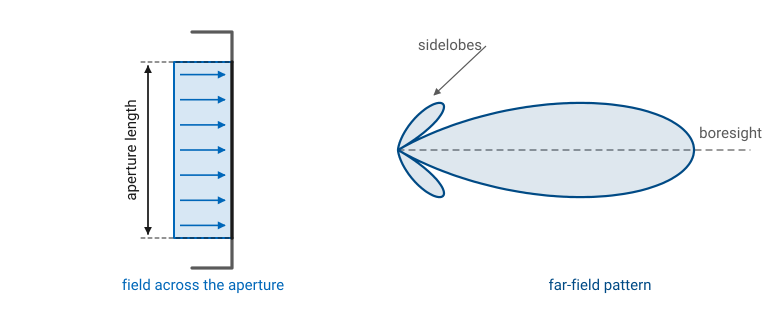
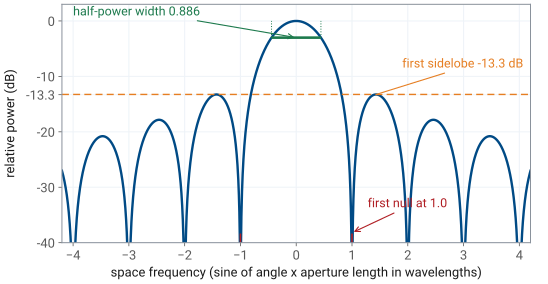
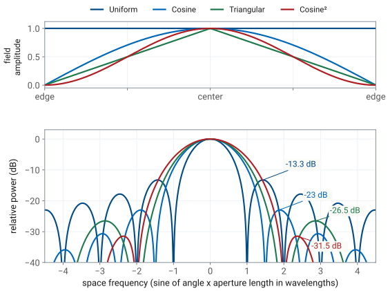

L15 - Aperture Distributions and Efficiency#
Aperture Distributions and Efficiency
Change the distribution and you change the pattern.
Lesson 15 · Antennas, Phased Arrays, and Radar Systems · Dr. Neil Rogers
Learning Objectives
- I can explain how an aperture's field distribution determines its far-field pattern through the Fourier transform relationship.
- I can compute the beamwidth and first sidelobe level of a uniform aperture from its dimensions.
- I can calculate aperture efficiency for a given illumination and use it in the gain formula.
- I can state the sidelobe, beamwidth, and efficiency trades that tapering the illumination involves.
- I can predict how scaling an aperture in wavelengths changes its beamwidth and gain.
Where we were
In Lesson 14 you measured patterns: you turned an antenna in front of a source, recorded power against angle, and produced a main lobe, a set of sidelobes, and a beamwidth. Module 3 turns that around. From here on you are the one who decides where the lobes go, and the first design variable you get is the aperture distribution — the field across the opening that radiates. This lesson connects that distribution to the pattern it produces, puts numbers on the beamwidth and sidelobe level of the simplest case, and defines the efficiency that turns aperture area into gain. Those numbers carry straight into the array work that occupies the rest of the module.
Part 1: The aperture is the source
An aperture is the opening a wave leaves through: the mouth of a horn, the projected face of a reflector, the radiating surface of a patch, or the row of elements on the PHASER board. Whatever is behind it, the far field depends on only one thing — the tangential electric field across that opening, which is the aperture distribution \(E_a\). Change the distribution and you change the pattern. Leave the distribution alone and no change behind the aperture can alter the far field.
The transform relationship
Lesson 6 established the relationship. For a source confined to a region, the far field is the Fourier transform of the source distribution, and Module 1 carried that out for the line source. Take the one-dimensional aperture of length \(L\) lying along \(x\), radiating into the half-space in front of it, and measure the angle \(\theta\) from broadside (the aperture normal). The space factor is
The transform relationship, continued
with \(k = 2\pi/\lambda\). The exponent is the extra path from the element at \(x\) relative to the aperture center, converted to phase. That integral is a Fourier transform: the aperture coordinate \(x\) is the variable, and the transform variable is the space frequency
Working in \(u\) instead of \(\theta\) is what makes the results in this lesson reusable. The shape of \(\vert S\vert\) against \(u\) depends only on the shape of the illumination. The aperture’s size in wavelengths, \(L/\lambda\), sets how much angle each unit of \(u\) costs, and nothing else. That single split — shape sets the pattern in \(u\), size sets the scale from \(u\) to degrees — is the organizing idea of this lesson and of the whole module.
The aperture field and the pattern it produces

One convention note
Note
Module 1 wrote the line-source pattern in the polar angle measured from the wire axis. Module 3 measures \(\theta\) from broadside instead, which is what every phased-array plot and every PHASER readout uses, so the space frequency here carries \(\sin\theta\) rather than \(\cos\theta\). Lesson 16 makes that substitution explicit once; after that, broadside is \(\theta = 0\) everywhere in the module.
Key point
The far field is the Fourier transform of the aperture field. The shape of the illumination sets the sidelobe level, and the size of the aperture in wavelengths sets the beamwidth. Those two knobs are close to independent, and every aperture and array design in this course is an argument about how to set them.
Part 2: The uniform aperture
Start with the simplest illumination, a constant field \(E_a(x) = E_0\) across the whole opening. The integral is elementary:
Derive it: the sinc
With \(k = 2\pi/\lambda\) the argument is \(\tfrac{1}{2}kL\sin\theta = \pi u\), so the normalized field pattern of a uniform aperture is a sinc function of the space frequency:
Three numbers fall out of that one line, and you should know all three.
Nulls
\(\sin\pi u\) vanishes at \(u = \pm 1, \pm 2, \pm 3, \dots\), so the first null sits at \(\sin\theta = \lambda/L\). An aperture shorter than one wavelength has no null anywhere in real space, which is why a small aperture radiates broadly no matter how it is fed.
Beamwidth
Solving \(\sin(\pi u)/(\pi u) = 1/\sqrt{2}\) gives \(\pi u = 1.3916\), so the half-power points sit at \(u = \pm 0.4429\) and
The \(0.886\) is worth memorizing. It is the constant behind the array beamwidth formula in Lesson 20 and behind every beamwidth prediction you will make on the PHASER.
First sidelobe
The first sidelobe peaks near \(u = 1.43\), where \(\vert F\vert = 0.217\), or \(-13.3\) dB. Notice what is missing from that statement: \(L\). Making a uniform aperture longer narrows the beam and raises the gain, and it leaves the first sidelobe exactly \(13.3\) dB below the peak. Sidelobes are set by the shape of the illumination, and the uniform shape is stuck at \(-13.3\) dB.
The uniform aperture pattern

Worked example — beamwidth of a 10-wavelength aperture
Worked example — beamwidth of a 10-wavelength aperture
A uniformly illuminated aperture is \(L = 10\lambda\) long. Its half-power beamwidth is
its first nulls are at \(\sin\theta = 0.1\), or \(\theta = \pm 5.74^\circ\), and its first sidelobe is \(13.3\) dB down. At \(10\ \text{GHz}\) that aperture is \(0.30\ \text{m}\) long. At \(3\ \text{GHz}\) the same \(0.30\ \text{m}\) is only \(3\lambda\), and the beam opens to \(16.9^\circ\). The physical length did not change; the length in wavelengths did.
Rectangular apertures
A rectangular aperture costs nothing extra when the illumination separates, \(E_a(x,y) = E_x(x)E_y(y)\). The double integral factors, and the pattern in each principal plane is the line-source result for that dimension:
A tall narrow aperture makes a wide flat beam, and a wide short aperture makes a narrow tall one. The long dimension always makes the narrow beam.
Circular apertures
A circular aperture of diameter \(D\) does not separate, and its uniform-illumination transform is a Bessel function rather than a sinc. The results are quoted here and used as design numbers:
The circle is a little wider in beam than a square of the same width and a little better in sidelobes, and for the same reason: the edges of a circular aperture carry less of the total area than the edges of a rectangle, so the aperture is already mildly tapered as seen along any cut.
Part 3: Aperture efficiency
Module 1 defined the effective aperture \(A_e = G\lambda^2/4\pi\) and left an obvious question hanging: how much of a real antenna’s physical area \(A\) actually counts? The answer is the aperture efficiency \(\eta_\text{ap}\), defined so that
Aperture efficiency: the ratio
To get \(\eta_\text{ap}\) from the illumination, compare two quantities. The boresight field is the coherent sum of everything on the aperture, \(\int E_a\ da\), since at \(\theta = 0\) every point arrives in phase. The power the aperture must supply to produce that field is proportional to \(\int \vert E_a\vert^2 da\). Directivity is the ratio of radiated intensity to average radiated power, and carrying that through gives
Aperture efficiency: the ratio, continued
Read that ratio as coherent gain over available gain. The numerator rewards field that adds up in phase; the denominator is the power the aperture had to radiate. By the Cauchy-Schwarz inequality the ratio never exceeds one, and it equals one only when \(E_a\) has constant amplitude and constant phase over the whole aperture. Uniform illumination is the most efficient illumination there is, and every departure from it — a taper, a phase error, a piece of aperture with nothing on it — costs efficiency.
Worked example — efficiency of a cosine illumination
Worked example — efficiency of a cosine illumination
Take \(E_a(x) = \cos(\pi x/L)\) over \(-L/2 \le x \le L/2\), which is the illumination inside the mouth of a pyramidal horn in its broad dimension. Work in \(\xi = x/L\) so the aperture runs from \(-1/2\) to \(1/2\) and its length is \(1\):
Worked example — efficiency of a cosine illumination, continued
Worked example — efficiency of a cosine illumination, continued
The cosine-illuminated aperture delivers \(81\%\) of the gain its area could support, a loss of \(0.9\) dB. The same arithmetic gives \(0.75\) for a triangular illumination and \(2/3\) for \(\cos^2\).
What else eats aperture efficiency
Two cautions on using \(\eta_\text{ap}\) in practice. First, the amplitude taper is only one of its terms: a real reflector also loses to spillover past the rim, to phase error across the surface, to feed and strut blockage, and to cross-polarization, and \(\eta_\text{ap}\) as measured is the product of all of them. That is why a horn typically comes in near \(0.5\) and a well-designed reflector at \(0.55\) to \(0.7\), even though the amplitude taper alone would predict \(0.75\) or better. Second, \(\eta_\text{ap}\) is not radiation efficiency. \(\eta_\text{rad}\) accounts for power turned into heat; \(\eta_\text{ap}\) accounts for power that radiates but does not end up on boresight.
Key point
\(G = \eta_\text{ap}\ 4\pi A/\lambda^2\). Area and wavelength set the ceiling, and the illumination decides how close to the ceiling you get. Use \(\eta_\text{ap} \approx 0.5\) for a horn and \(0.55\) to \(0.7\) for a good reflector when you have nothing better.
Part 4: What tapering does to the pattern
Tapering means letting the illumination fall off toward the edges of the aperture instead of stopping abruptly. The uniform aperture’s \(-13.3\) dB sidelobes come from the sharp edge: the transform of a function with a step in it decays slowly. Round the edge off and the sidelobes fall away much faster. The outer part of the aperture no longer works at full strength, so the aperture behaves as though it were shorter and less complete than it is, the beam widens, and the gain falls.
The taper trade
Four illuminations cover most of the ground, and their numbers are the ones this course uses everywhere:
Illumination |
First sidelobe |
HPBW (\(\times\ \lambda/L\)) |
\(\eta_\text{ap}\) |
Gain penalty |
|---|---|---|---|---|
Uniform |
\(-13.3\) dB |
\(0.886\) |
\(1.00\) |
\(0\) dB |
Cosine |
\(-23\) dB |
\(1.19\) |
\(0.81\) |
\(-0.9\) dB |
Triangular |
\(-26.5\) dB |
\(1.27\) |
\(0.75\) |
\(-1.2\) dB |
Cosine\(^2\) |
\(-31.5\) dB |
\(1.44\) |
\(0.667\) |
\(-1.8\) dB |
What the taper trade costs
The table reads as one continuous trade. Going from uniform to \(\cos^2\) lowers the first sidelobe by \(18\) dB, widens the beam by \(63\%\), and loses \(1.8\) dB of gain. There is no illumination that lowers sidelobes and narrows the beam at the same time, and knowing that saves a great deal of time in front of a specification. When a radar system needs low sidelobes to keep clutter and jamming out of the receiver, it gives up beamwidth and aperture size to get them.
Interactive — shape sets sidelobe and beamwidth; length only rescales
The widget below computes the pattern of each illumination directly from the aperture integral. Pick an illumination and watch three things: the sidelobe level and the half-power constant change together, while the aperture length slider moves the pattern in angle without touching either. Set the aperture to \(2\lambda\) and step through the illuminations to see the sidelobes leave visible space entirely, then set it to \(20\lambda\) and confirm that the first sidelobe of the uniform case is still exactly \(13.3\) dB down.
Four illuminations, four patterns

An array is a sampled aperture
Note
An array is an aperture sampled at discrete points, so the same trade appears there with sums in place of integrals. The array version of aperture efficiency is the taper efficiency \(\eta_t = (\sum a_n)^2 / (N\sum a_n^2)\), which is the identical ratio of coherent to available gain evaluated over \(N\) element amplitudes. Lessons 24 and 25 use it on the PHASER, where the Hann and Blackman presets are the discrete cousins of the \(\cos\) and \(\cos^2\) rows above.
Part 5: Designing in wavelengths
Every result so far depends on \(L/\lambda\) and \(A/\lambda^2\), never on \(L\) or \(A\) alone. That gives two scaling rules that let you size hardware before you know anything else:
Beamwidth scales as \(\lambda/L\). Double the aperture in wavelengths and the beam is half as wide.
Gain scales as \(A/\lambda^2\). Double both aperture dimensions in wavelengths and the gain rises by a factor of four, or \(6\) dB.
Part 5: Designing in wavelengths, continued
Both rules apply whether you change the aperture or change the frequency. An antenna moved from \(10\ \text{GHz}\) to \(20\ \text{GHz}\) doubles its size in wavelengths, halves both beamwidths, and gains \(6\) dB, provided the feed keeps illuminating it the same way. That proviso matters on real hardware, since a feed horn’s illumination pattern is itself frequency-dependent, but the scaling is the right first estimate.
Worked example — sizing an X-band aperture
Worked example — sizing an X-band aperture
Size a rectangular aperture at \(10\ \text{GHz}\) for a \(3^\circ\) beam in azimuth, a \(10^\circ\) beam in elevation, and azimuth sidelobes no higher than \(-20\) dB. At \(10\ \text{GHz}\), \(\lambda = 3\times10^8/10^{10} = 0.03\ \text{m}\).
Quantity |
Work |
Result |
|---|---|---|
Azimuth illumination |
uniform gives only \(-13.3\) dB; cosine gives \(-23\) dB |
cosine, constant \(1.19\) |
Azimuth length |
\(L_x = 1.19\lambda/\theta_\text{HP} = 1.19(0.03)/0.05236\) |
\(0.68\ \text{m} = 22.7\lambda\) |
Elevation length |
uniform is fine; \(L_y = 0.886(0.03)/0.1745\) |
\(0.15\ \text{m} = 5.1\lambda\) |
Worked example — sizing an X-band aperture, continued
Worked example — sizing an X-band aperture, continued
Quantity |
Work |
Result |
|---|---|---|
Aperture area |
\(A = 0.68 \times 0.15\) |
\(0.104\ \text{m}^2\) |
Aperture efficiency |
\(0.81\) in azimuth \(\times\ 1.00\) in elevation |
\(0.81\) |
Gain |
\(G = 0.81(4\pi)(0.104)/(0.03)^2 = 1174\) |
\(30.7\ \text{dBi}\) |
Far-field distance |
\(2D^2/\lambda = 2(0.68)^2/0.03\) |
\(31\ \text{m}\) |
Worked example — sizing an X-band aperture, checking the design
Worked example — sizing an X-band aperture, checking the design
Check the gain against the pencil-beam estimate from Lesson 2: \(41{,}253/(3 \times 10) = 1375\), or \(31.4\ \text{dBi}\), is the lossless geometric bound, and the practical constant of \(26{,}000\) to \(32{,}400\) gives \(29.4\) to \(30.3\) dBi. The computed \(30.7\) dBi sits just above that band, which is the right place for an aperture whose only loss is a known amplitude taper. A real antenna with spillover and a feed in front of it would land inside it.
Worked example — sizing an X-band aperture (cont.)
Worked example — sizing an X-band aperture, checking the design (cont.)
Two consequences worth carrying away. The \(3^\circ\) azimuth requirement is what made this antenna \(0.68\ \text{m}\) wide, and the sidelobe requirement made it \(34\%\) wider than a uniform aperture with the same beamwidth would have been. Also, a \(31\ \text{m}\) far-field distance means this antenna cannot be pattern-tested in any ordinary room, which is the same constraint you worked with in Lesson 14.
Gain is the last thing you compute
Notice how the requirements mapped onto the aperture. The sidelobe specification chose the illumination, the illumination fixed the beamwidth constant, the beamwidth specification then fixed the length, and only after all of that did the gain come out. Gain is the last thing you compute for an aperture antenna, not the first thing you choose.
Summary — the aperture-to-pattern relationship
Symbol / idea |
What it is |
Number to remember |
|---|---|---|
\(E_a(x)\) |
aperture distribution, the field across the opening |
the pattern depends on nothing else |
\(u = (L/\lambda)\sin\theta\) |
space frequency; pattern \(=\) Fourier transform of \(E_a\) |
shape sets \(u\)-pattern, size sets the angle scale |
\(\vert F\vert = \vert\sin\pi u/\pi u\vert\) |
uniform line source or aperture |
nulls at integer \(u\) |
Summary — beamwidth and sidelobes
Symbol / idea |
What it is |
Number to remember |
|---|---|---|
\(\theta_\text{HP}\) |
half-power beamwidth of a uniform aperture |
\(0.886\ \lambda/L\), or \(50.8^\circ\ \lambda/L\) |
first sidelobe |
uniform aperture, any length |
\(-13.3\) dB; circular uniform, \(-17.6\) dB |
Summary — efficiency, gain, and the trade
Symbol / idea |
What it is |
Number to remember |
|---|---|---|
\(\eta_\text{ap}\) |
coherent gain over available gain |
\(1.00\) / \(0.81\) / \(0.75\) / \(0.667\) for uniform / cos / triangular / cos\(^2\) |
\(G = \eta_\text{ap}\ 4\pi A/\lambda^2\) |
gain of an aperture antenna |
horn \(\approx 0.5\), good reflector \(0.55\) to \(0.7\) |
taper trade |
lower sidelobes cost beamwidth and gain |
\(-13.3 \to -31.5\) dB costs \(63\%\) beamwidth and \(1.8\) dB |
Practice
Where this is going
Lesson 16 samples the aperture. Replace the continuous illumination with \(N\) discrete elements spaced \(d\) apart, replace the integral with a sum, and the space factor becomes the array factor — the same Fourier relationship with the same beamwidth constant and the same sidelobe trade, now expressed in element weights you can change electronically. Pattern multiplication follows immediately: the full pattern is the element factor times the array factor. Everything in this lesson survives that step, which is why it is worth having the numbers cold before you get there.
The Fourier view carries the rest of the module. Steering the beam in Lesson 18 is a linear phase ramp across the aperture, which shifts the transform. Sidelobe control in Lesson 24 is the taper table applied to element amplitudes. Grating lobes in Lesson 26 are what happens when the sampling is too coarse. Before Lesson 16, be able to state the uniform-aperture beamwidth constant, its first sidelobe level, and the definition of aperture efficiency without looking them up. The midterm pattern-measurement project is due at Lesson 20, and the beamwidth and sidelobe numbers you predict for it come from this lesson.